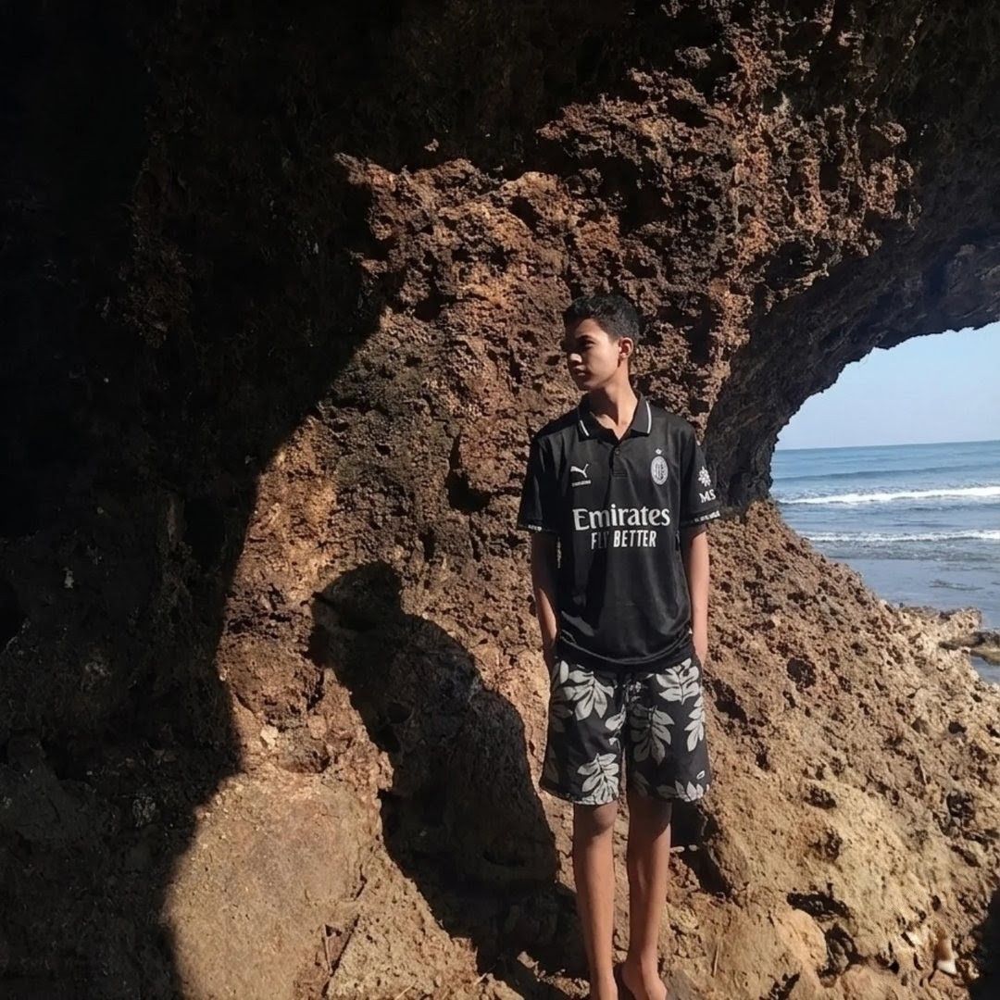

Earl John Rebellon
Hi! Welcome to my personal biography page. Here is a little bit about me:

About Me
- Current School: Grade 11 STEM student at PHINMA St. Jude College Dasmariñas Cavite Inc.
- Junior High: Graduated from Salawag National High School
- Elementary: Graduated from Don Salvador Benedicto Memorial School
- Birthday: April 11, 2010
- Background: Raised in Bacolod, Negros Occidental; currently living in Dasmariñas, Cavite.
Hobbies & Interests
- Solving Rubik's cubes
- Playing the keyboard
- Gaming
Socials